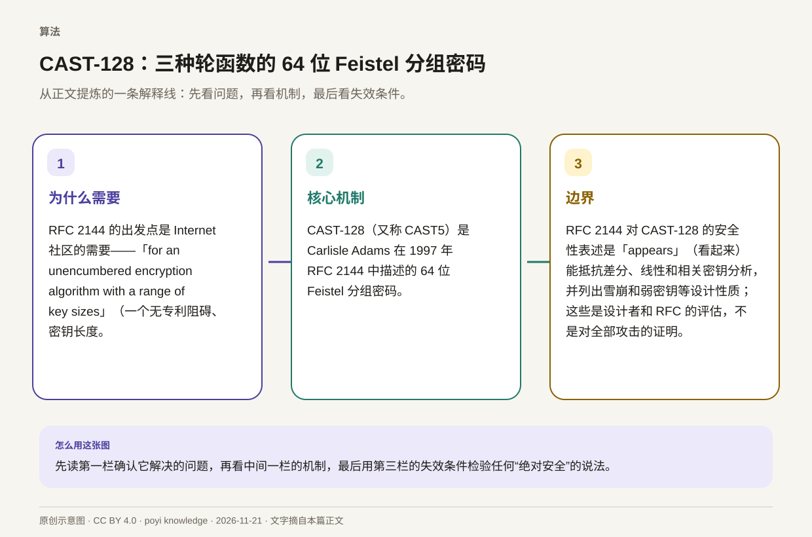
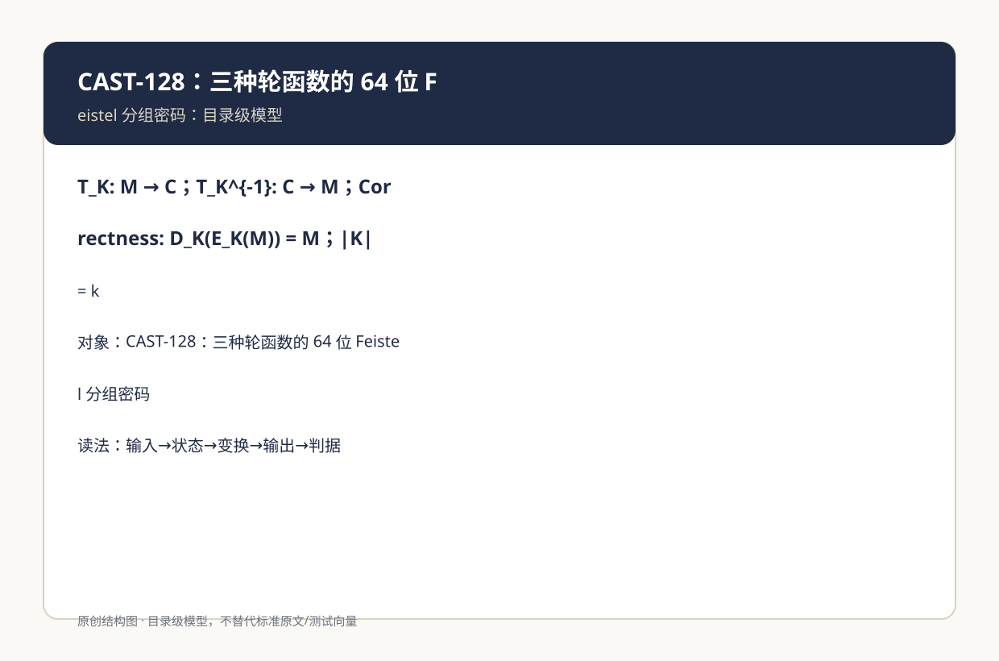

原理与机制
算法：CAST-128 分组密码（CAST-128）。CAST-128（又称 CAST5）是 Carlisle Adams 在 1997 年 RFC 2144 中描述的 64 位 Feistel 分组密码。它把 64 位明文分成左右各 32 位 L0、R0，使用 40 到 128 位密钥（以 8 位为步长），并进行 12 或 16 轮：密钥「up to and including 80 bits」（不超过 80 位）时用 12 轮，超过 80 位时用 16 轮。RFC 明确把 CAST-128 归入 Feistel 密码类，并说它的整体操作与 DES 相似；RFC 的引言也把它称为 DES-like SPN，但第 2 节给出的 Li/Ri 轮结构是 Feistel 形式，本文按第 2 节的结构描述称其为 Feistel 密码。```text Li = R(i-1) Ri = L(i-1) XOR f(R(i-1), Kmi, Kri)
最后一轮（16 轮或 12 轮）之后交换最后两块，密文是 `R(rounds) || L(rounds)`；16 轮时即 `R16 || L16`，12 轮时即 `R12 || L12`。解密使用同样的结构，但按相反顺序使用轮子密钥。CAST-128 从 128 位密钥材料导出 32 个 32 位子密钥 K1..K32，再配成 16 对：第 i 轮的掩码子密钥 `Kmi = Ki`，旋转子密钥 `Kri = K(16+i)`；Kri 只使用最低 5 位。轮函数有三种类型：
```text
Type 1: I = ((Kmi + D) <<< Kri); f = ((S1[Ia] ^ S2[Ib]) - S3[Ic]) + S4[Id]
Type 2: I = ((Kmi ^ D) <<< Kri); f = ((S1[Ia] - S2[Ib]) + S3[Ic]) ^ S4[Id]
Type 3: I = ((Kmi - D) <<< Kri); f = ((S1[Ia] + S2[Ib]) ^ S3[Ic]) - S4[Id]
其中 Ia..Id 是 I 的最高字节到最低字节，+、- 是模 2^32 的加法和减法，<<< 是循环左移。第 1、4、7、10、13、16 轮使用 Type 1；第 2、5、8、11、14 轮使用 Type 2；第 3、6、9、12、15 轮使用 Type 3。CAST-128 使用八个 S-box：S1、S2、S3、S4 用于轮函数，S5、S6、S7、S8 用于密钥扩展；每个 S-box 有 256 个 32 位字。八个 S-box 共需 8 KB 存储，但密钥扩展完成后加密和解密只需要轮函数使用的 4 KB。密钥扩展把 16 字节密钥写成 x0..xF，先计算中间字节 z0..zF，再导出 K1..K32。RFC 2.4 节给出的第一组公式是：
z0z1z2z3 = x0x1x2x3 ^ S5[xD] ^ S6[xF] ^ S7[xC] ^ S8[xE] ^ S7[x8]
K1 = S5[z8] ^ S6[z9] ^ S7[z7] ^ S8[z6] ^ S5[z2]
K2 = S5[zA] ^ S6[zB] ^ S7[z5] ^ S8[z4] ^ S6[z6]
K3 = S5[zC] ^ S6[zD] ^ S7[z3] ^ S8[z2] ^ S7[z9]
K4 = S5[zE] ^ S6[zF] ^ S7[z1] ^ S8[z0] ^ S8[zC]
其余 z、x 和 K5..K32 的公式见 RFC 2144 第 2.4 节。本文的教学实现按这些公式逐项计算，并用 RFC 附录 B 的向量检查。密钥长度可以是 40 到 128 位，以 8 位为步长。对于不足 128 位的密钥，密钥扩展的输入在右侧补零到 16 字节；但轮数由声明的密钥长度决定，而不是由补齐后的字节数决定：10 字节（80 位）密钥内部补成 16 字节，仍只运行 12 轮；如果调用者直接提供 16 字节且末尾为 0 的密钥，它被视为 128 位密钥并运行 16 轮。RFC 还规定 CAST-128 与 CAST5 是同义词，带密钥长度时可写作 CAST5-40、CAST5-128 等。

为什么重要
RFC 2144 的出发点是 Internet 社区的需要——「for an unencumbered encryption algorithm with a range of key sizes」（一个无专利阻碍、密钥长度可调的加密算法）以及足够的性能。RFC 说 CAST-128 看起来能抵抗差分分析、线性分析和相关密钥分析，并列出雪崩、严格雪崩准则（SAC）、位独立准则（BIC）、无补码性质和「absence of weak and semi-weak keys」（不存在弱密钥与半弱密钥）等性质。RFC 2.7 节还说，轮函数中的循环移位「provide intrinsic immunity to linear and differential attacks」（带来对线性和差分攻击的内在免疫力），XOR、加法、减法三种运算的混合以及三种轮函数增加了分析的难度；它给出的 S-box 最小「nonlinearity of 74 and a maximum」，即非线性为 74、差分分布表最大项为 2。HAC 的注释从设计方法角度补充：CAST 是一个设计过程（design procedure），用于构造一族 DES 类密码，使用基于 bent 函数的固定 m×n S-box，密钥长度和轮数可变；Adams 与 Tavares 研究过如何构造抵抗差分分析的大 S-box，并给出一个 64 位块、8 个 32 位 S-box 的 CAST 密码部分例子（partial example）。CAST-128 是这一设计族在 RFC 2144 中的具体实例，而不是整个设计过程本身。RFC 2.7 节还声称 CAST-128 在 150 MHz Pentium 上达到 3.3 MB/s，并认为它的强度与 128 位密钥相称。本文把这些数字当作 RFC 的实现声明，没有独立基准测试，也不把它们当作安全性证明。
应用与实例
RFC 2984 是 Standards Track 文档，规定如何在 CMS/S/MIME 中使用 CAST-128：它定义内容加密 OID cast5CBC 和密钥包装 OID cast5CMSkeywrap，内容加密推荐 CBC 模式，密钥长度可在 40 到 128 位之间变化；cast5CBC 参数中的 IV 可缺省为全零，其长度由 64 位块决定，即 8 字节。密钥包装按 RFC 2630 的 CMS 流程引用，且只有 128 位 CAST-128 密钥可以作为密钥加密密钥（cast5CMSkeywrapParameter 设为 128）。这说明 CAST-128 被标准化用于消息基础设施，而不是只停留在论文里。RFC 4880（OpenPGP，2007 年）是历史文档，已被 2024 年的 RFC 9580 废止；它把 CAST5 列为对称算法编号 3，注明使用 128 位密钥并引用 RFC 2144，还说实现应当（SHOULD）支持 AES-128 和 CAST5。RFC 9580 则规定实现不得（MUST NOT）用 IDEA、TripleDES 或 CAST5 加密数据；实现可以解密 CAST5，以读取「older messages or new messages from implementations predating support for」RFC 2440 之前的消息（旧消息，或来自尚不支持该 RFC 的实现的新消息），并应当生成弃用警告。因此 CAST-128 在 OpenPGP 中的现行角色是遗留消息解密，而不是新消息加密；这也说明它曾有隐私工具方面的部署记录。RFC 2144 附录 B.1 给出三组单块向量：
128 位密钥 = 01 23 45 67 12 34 56 78 23 45 67 89 34 56 78 9A
明文 = 01 23 45 67 89 AB CD EF
密文 = 23 8B 4F E5 84 7E 44 B2
80 位密钥 = 01 23 45 67 12 34 56 78 23 45（内部补零到 16 字节）
明文 = 01 23 45 67 89 AB CD EF
密文 = EB 6A 71 1A 2C 02 27 1B
40 位密钥 = 01 23 45 67 12（内部补零到 16 字节）
明文 = 01 23 45 67 89 AB CD EF
密文 = 7A C8 16 D1 6E 9B 30 2E
128 位密钥使用 16 轮；80 位和 40 位密钥使用 12 轮。本文对三组都执行加密，并把密文解密回原明文。附录 B.2 还定义一个维护测试：从 a=b=0123456712345678234567893456789a 开始，重复 1,000,000 次，每次用 b 加密 a 的左右两半、再用更新后的 a 加密 b 的左右两半；最终应得到：
a = EE A9 D0 A2 49 FD 3B A6 B3 43 6F B8 9D 6D CA 92
b = B2 C9 5E B0 0C 31 AD 71 80 AC 05 B8 E8 3D 69 6E
本文的验证脚本完整运行这 1,000,000 次迭代，而不只是抽样。这个测试同时覆盖密钥扩展、三种轮函数、最终交换和大量不同子密钥。

边界与攻击面
RFC 2144 对 CAST-128 的安全性表述是「appears」（看起来）能抵抗差分、线性和相关密钥分析，并列出雪崩和弱密钥等设计性质；这些是设计者和 RFC 的评估，不是对全部攻击的证明。RFC 4880（历史文档）在安全考虑中提醒，CAST5 目前被认为强度足够，但被分析的次数少于 TripleDES。把这两句话放在一起，本文认为 CAST-128 有长期公开使用记录，但不能把没有已知完整 16 轮的实用攻击写成绝对安全，也不能说它在所有攻击模型下都没有完整轮的实用攻击。RFC 2984 第 4 节还提醒，40、56、64 位等短密钥在某些环境中可能弱到不可接受，并总是推荐 128 位密钥（在法律允许时）。本文据此认为 RFC 2144 的 40 位测试向量只用于验证算法，不应被当作推荐部署配置。HAC 的注释提到，Rijmen 与 Preneel 给出一种适用于轮函数非满射的 Feistel 密码的分析技术，例子包括 LOKI'91 和某个 CAST 密码，并指出「cases where 6 to 8 rounds」（在这些条件下 6 到 8 轮）可能不够。这个注释针对的是 CAST 设计族中的一个例子，不是对 16 轮 CAST-128 的完整攻击；本文把它当作设计族的历史警告，不把它扩大成 CAST-128 已被攻破。CAST-128 的块长只有 64 位。HAC 注 7.8 说明，块长 n 较小时，约 2^(n/2) 个块后就可能出现匹配；对 n=64，生日尺度约为 2^32 个块。本文据此认为同一密钥下可安全处理的数据量有限，但这是通用生日分析，不是 CAST-128 专属定理。实现层面，CAST-128 的轮函数要按字节索引四个 S-box，密钥扩展还要索引另外四个；普通软件实现通常不是常量时间，缓存或时序可能泄露与密钥相关的访问模式，故障注入则可能导致错误输出或密钥恢复。CAST-128 只定义分组密码，不提供完整性、IV 管理或填充；这些必须由工作模式和协议负责。本文的教学实现不是常量时间，不生成密钥，不实现模式、协议、密钥管理或侧信道防护。
历史与背景
HAC 的注释把 CAST 描述为一个设计过程，用于构造一族 DES 类密码：它使用固定 m×n S-box、可变密钥长度和可变轮数，S-box 的设计与 bent 函数和差分分析有关；HAC 引用的 Adams 与 Tavares 论文研究抵抗差分分析的大 S-box，并给出一个 CAST 密码部分例子（partial example）。CAST-128 是这一设计族在 1997 年 RFC 2144 中的具体算法。RFC 2144 由 Carlisle Adams（Entrust Technologies）在 1997 年 5 月发表，类别是 Informational；它说文档描述的是一个已经存在的算法，而不是新提出一个标准。RFC 把 CAST-128 与 CAST5 视为同义词，并给出 40 到 128 位的可变密钥、12/16 轮、八个 S-box 和测试向量。RFC 第 3 节声明 CAST-128「is available worldwide on a royalty-free basis for commercial and non-commercial uses」（对商业和非商业用途均可在全球范围内免版税使用）。2000 年 10 月，RFC 2984 以 Standards Track 类别规定 CAST-128 在 CMS/S/MIME 中的 OID、CBC 用法和密钥包装；2007 年 RFC 4880 把 CAST5 列入 OpenPGP 的对称算法表，2024 年 RFC 9580 废止 RFC 4880 并禁止用 CAST5 加密新消息。本文的 CAST-128 实体指这一种 64 位 Feistel 分组密码；CAST5 是它的同义词，CMS 和 OpenPGP 是使用它的协议，CAST 设计过程是它所属的设计族。DES 是 RFC 用来描述结构的类比对象（“DES-like”），不是 CAST-128 的组成部件，因此本文不把 DES 当作必修前置。
逐步示例与核验
复算示例
取标准或公开测试向量中的一组参数，按“输入—执行—输出”记录：先写出该条目的形式式 (C=E_K(P;r),\qquad P=D_K(C))；再按规范顺序执行每一步，最后把输出与独立实现或标准向量逐字节对照。若没有可引用的数值向量，就只记录结构步骤，不伪造输出。
参考出处
- Wikipedia search entry for CAST-128 分组密码. https://zh.wikipedia.org/w/index.php?search=CAST-128%20%E5%88%86%E7%BB%84%E5%AF%86%E7%A0%81
- Handbook of Applied Cryptography (Menezes, van Oorschot, Vanstone). https://www.cacr.math.uwaterloo.ca/hac/